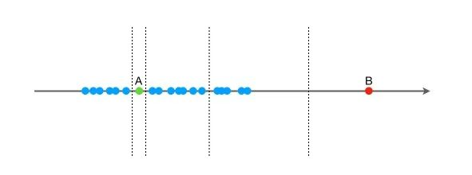
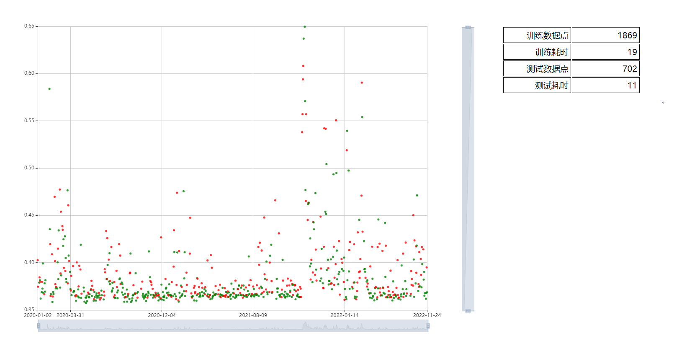

在工业时序数据的异常检测中，我们通常使用基于SPC（统计过程控制）的异常检测算法，通过训练的上下限判定异常点。但是随着工况复杂度上升，一维的数据无法满足数据分析和异常检测的需求，我们需要引入支持多纬度数据的算法，这时候孤立森林走入了我们的视野。
隔离森林又名孤立森林，是一种从异常点出发，通过指定规则进行划分，根据划分次数进行判断的异常检测方法。 [1] 由周志华教授等人于2008年在第八届IEEE数据挖掘国际会议上提出。
算法思想
孤立森林中的孤立，是通过多次划分将异常点孤立出来的意思。想象平面上的一堆点，对于很密集的点需要切很多次才有可能孤立开来，而相对比较离群的点可以很轻松的被孤立。算法认为这些离群点相对聚集点来说成为异常点的概率更高，这就是孤立森林算法的出发点。

如上图所示，需要孤立出B点只需要切一次，而孤立出A点至少需要切两次。从算法解释上来看B点更容易被孤立出来，所以B点为异常点的概率更高。
算法步骤
总体来说孤立森林包含训练和判定两个步骤，通过训练可以得出一个包含一批决策树的森林，在判定过程中通过将判定点放入森林中的每一棵树得到表现分后综合判定一个异常得分。
算法训练
算法训练包含如下过程：
- 将训练集划分为多个子数据集
- 针对每一个子数据集构建子树
- 将子树组合成森林
- 训练完成
如下是训练过程的基本的代码实现：
1
2
3
4
5
6
7
8
9
10
11
12
13
14
15
16
17
18
19
20
21
22
| int baseSeed = IFUtils.IF_SEED;
Random random = new Random(baseSeed);
int[] seeds = new int[subTreeNum];
for(int i = 0; i < subTreeNum; i++) {
seeds[i] = random.nextInt(Integer.MAX_VALUE);
}
Random treeRandom = new Random(baseSeed);
for (int i = 0; i < subTreeNum; i++) {
subSample = new double[subSampleSize][2];
random.setSeed(seeds[i]);
Integer[] indexs = IFUtils.getUniqueIndex(random, subSampleSize, samples.length);
for (int j = 0; j < subSampleSize; j++) {
subSample[j] = samples[indexs[j]];
}
iTree = ITree.createITree(subSample, 0, limitHeight, treeRandom);
this.iTreeList.add(iTree);
}
|
在训练集划分为子数据集的过程中，通过Java提供的Random类为每一个子数据集指定一个随机种子，然后通过随机种子生成对应的子数据集，确保了训练结果的稳定。
构建子树的时候采用了递归构建的方法构建二叉树，划分的依据是从当前数据集的数据范围中取一个随机的切分点形成左子树和右子树。划分的步骤为：
- 根据随机种子随机选取一个维度
- 判断当前维度是否适合作为划分依据，如不满足，继续步骤1
- 基于选中维度随机选取一个切分点，生成左子树和右子树
- 判断子树是否满足退出条件，如不满足，进入步骤1进行子树划分，如满足则退出
1
2
3
4
5
6
7
8
9
10
11
12
13
14
15
|
int attrIndex = random.nextInt(cols);
double[] maxAndMin = calMaxAndMinOfOneAttr(attrIndex, samples);
double max = maxAndMin[0];
double min = maxAndMin[1];
while(min == max) {
attrIndex = (attrIndex + 1) % cols;
maxAndMin = calMaxAndMinOfOneAttr(attrIndex, samples);
max = maxAndMin[0];
min = maxAndMin[1];
}
|
1
2
3
4
5
6
7
8
9
10
11
12
13
14
15
16
17
18
19
20
21
22
|
if (samples.length == 0) {
return iTree;
} else if (curHeight >= limitHeight || samples.length == 1) {
int randomAttr = random.nextInt(samples[0].length);
iTree = new ITree(randomAttr, samples[0][randomAttr]);
iTree.leafNodes = samples.length;
iTree.curHeight = curHeight;
return iTree;
}
int rows = samples.length;
int cols = samples[0].length;
boolean isAllSame = IFUtils.isSampleAllSame(samples);
if (isAllSame) {
iTree = new ITree(0, samples[0][0]);
iTree.leafNodes = samples.length;
iTree.curHeight = curHeight;
return iTree;
}
|
结果判定
给定一个待测试点，使用以下步骤进行结果判定：
- 计算待测试点在每一棵树上的平均Path Length
- 使用平均Path Length计算异常得分
- 根据异常得分判定是否异常，阈值可以指定也可以通过分位数训练得到
1
2
3
4
5
6
7
8
9
10
11
12
13
14
15
16
17
18
| public double computeAnomalyScore(double[] sample){
if(iTreeList.isEmpty()) {
throw new IllegalArgumentException("iTreeList is empty");
}
if(sample == null || sample.length == 0) {
throw new IllegalArgumentException("Sample is null or empty");
}
double ehx = 0;
double pathLength = 0;
for (ITree iTree : iTreeList) {
pathLength = computePathLength(sample, iTree, 0);
ehx += pathLength;
}
ehx /= iTreeList.size();
double index = ehx / computeCn(subSampleSize);
return Math.pow(2, -index);
}
|
其中computePathLength 和 computeCn 都沿用论文中的计算公式，这里就不赘述了。
算法应用
孤立森林算法可以应用于具备稳定工况的场景，如电机正常运行时的电流电压，升降机的扭矩和编码尺位置都可以作为算法的输入来判断设备的运行是否存在异常的可能。相对单因子的SPC分析，孤立森林的多因子组合分析在某些场景会更加贴近实际，因为异常的发生往往伴随着多个指标的异常表现。

上图是对某股票的走势运用孤立森林回测的结果，关注因子是涨幅和换手率，如果感兴趣可以加入更多指标。
通过观察发现超过0.6得分的交易日都出现了较大的涨跌幅或者在未来一周实现了较大的涨跌，可以使用这个分数来作为入场或者出局的辅助判断依据，同时可以根据一段时间内的得分方差判断股票的活跃程度。
当然股票毕竟不符合稳定工况的前提，所以辅助判断可以，真金白银还得三思而后行。
最后附上完整代码的地址：https://gitee.com/luischen/toolbox